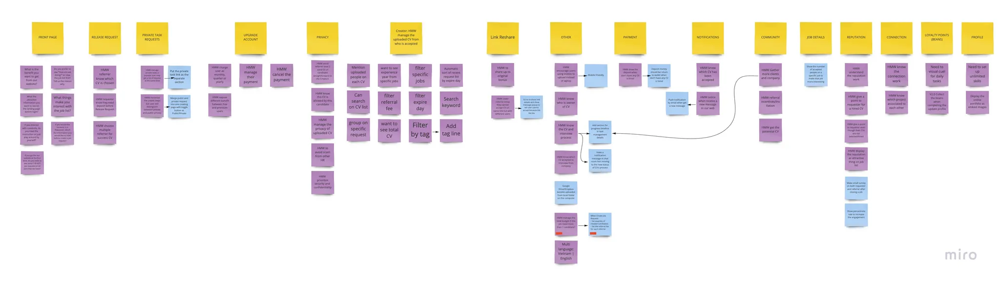
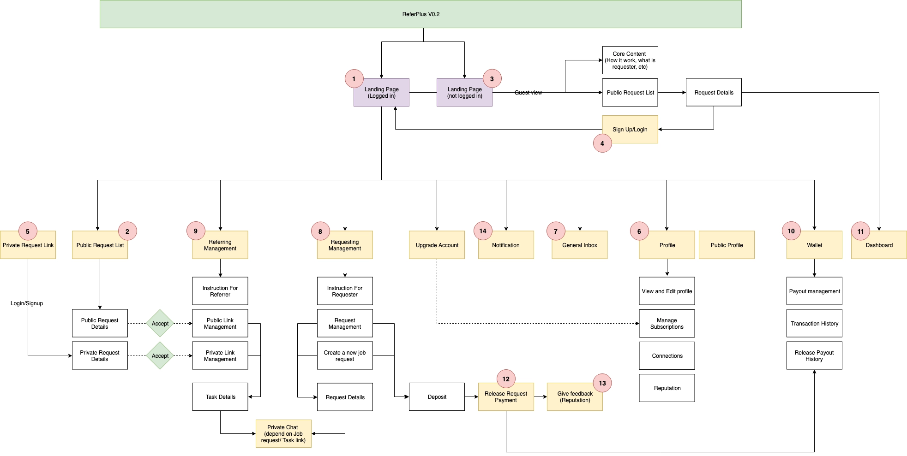

Information
Architecture
Organise for users — not for the org chart. Sitemaps, card sorting, and user flows before you touch a screen.
Winnie
Nguyen
What you brought into today
Affinity Mapping
Turning raw interview notes into themes — grouping observations until patterns emerge from the data.
Insight Statements
Observation + Implication — translating research findings into actionable design direction.
How Might We
Reframing problems as opportunities — opening solution space without committing to an answer too early.
Problem Statement
A grounded, user-centred framing of the design challenge — your compass for the rest of the project.
From problem statement to structural design decision
What is Information Architecture?
Inherited vs evidence-based IA — understand what you're actually working with before you change anything.
Card Sorting
How to learn what users expect before you build — open and closed methods, when to use each.
Sitemaps
Make the current structure visible so you can change it — drawing the map before drawing any screens.
User Flows
Map what a user actually does, step by step, before touching a single wireframe frame.
A polished screen in the wrong flow is still a broken design.
Information
Architecture
The discipline of deciding how content is organised, labelled, and connected — so users can find what they need without thinking too hard.
IA decides what lives where, what things are called, and how navigation is structured.
Most designers inherit an IA from whoever came before — and never question it. Today's session is about making that structure visible, testing it against real user behaviour, and rebuilding it from evidence.
Inherited IA vs Evidence-Based IA
The signal: if your navigation mirrors the org chart — it's inherited.
Built for the business
- Source: POs, stakeholders, legacy systems, delivery teams.
- Organised by feature ownership, system architecture, or business unit.
- Risk: "It makes sense to us" — the org chart becomes the nav.
Built for users
- Source: card sorting, tree testing, user research, JTBD Maps.
- Organised around users' mental models, language, and task sequences.
- Risk: requires method discipline — but gives you something defensible.
Card
Sorting
A method for learning how users mentally group and label content — giving you evidence to defend structural decisions, not just intuition.
When and why to run a card sort
What it is
Users arrange content cards into groups that feel natural to them. You observe — and the groupings reveal their mental model.
Before building navigation
Run it when you don't know how to group content, or when you've inherited a structure you want to test.
When users can't find things
If users complain about findability but you're unsure which categories or labels are wrong — card sorting surfaces the gap.
3–5 people is enough
Even a small in-session test surfaces structural assumptions worth questioning. Divergence in results is data too.
Open card sort vs Closed card sort
Users create their own categories
- Users group cards and name the groups themselves — no predefined structure.
- Use when you have no existing navigation and need to discover how users think.
- Reveals: the user's mental model directly, in their own language.
Users sort into your categories
- You define the categories first — users sort content cards into them.
- Use when you want to validate an existing structure, not discover a new one.
- Reveals: whether your labels and groupings match user expectations.
What users reveal when you let them group freely
Users named their own groups. The clusters show their mental model — which often doesn't match the navigation you inherited. Divergence between participants is data too: it tells you where the model is genuinely ambiguous.
Card sort for a dual-user-type platform
ReferPlus was an HR referral community platform with two user types — recruiters and headhunters — each with different navigation needs on the same product. Card sorting helped decide how to structure the nav without privileging one user over the other.

Save image from Notion and name it
referplus-card-sort.jpg
in the same folder as this file
Sitemaps
A structural diagram of every page or screen in a product — showing hierarchy and connection. Not a wireframe. No layouts, no UI.
You can't redesign what you haven't made visible.
A sitemap makes structural problems undeniable. Draw two: one from the live product as it is today, and one rebuilt from card sorting results. Every box should be nameable without referring to which team built it — if you can't, that's an IA problem.
Inherited sitemap vs Evidence-based sitemap
Draw the inherited sitemap first — from the live product, screen by screen. Then rebuild from card sorting evidence. The two diagrams will show you exactly where the IA is serving the business, not the user.
Sitemap built from card sorting results
After the card sort, the team rebuilt the mobile IA from evidence. The diagram shows the full screen hierarchy — how screens connect and how each user type navigates from entry point to their goal, without getting lost in the other user's flow.

Save image from Notion and name it
referplus-sitemap.png
in the same folder as this file
Draw two sitemaps — not one
Document reality
- Draw it from the current live product — take screenshots, map every screen.
- Start here before changing anything. This is not a judgement — it's archaeology.
- Every box should be nameable without referring to the team that built it. If you can't — that's the IA problem.
Rebuild from research
- Rebuilt from card sorting results and your JTBD Map — what the user actually needs to do.
- Organises content around user tasks, not business categories or team ownership.
- This is the goal. The gap between the two sitemaps is your design opportunity.
User
Flows
A diagram of every step a user takes to complete one specific task — from entry point to final outcome. Map the structure before you design any screen.
Most design problems live in the flow — not in individual screens.
Without a user flow: you design screens before knowing what comes before or after them. Error states are discovered in development, not design. Stakeholders debate screen details without ever agreeing on task structure. A user flow is also your most useful engineering handover artefact.
Five shapes. Consistent shapes make flows readable to anyone.
Complete a purchase as a returning user
Map the happy path first — the ideal sequence when everything works. Then add error branches. Every diamond needs two labelled outgoing arrows. No orphaned shapes.
When more than one actor is involved
Each horizontal lane belongs to one actor — User, System, or Third Party. Actions are placed in the lane of whoever is responsible. Use swimlanes for checkout flows, onboarding triggers, or admin features.
Intelligent Mortgage Platform
A full "Decide & Apply" flow mapped across five swimlanes — Customer, Banker, Broker, Processor, and Fulfillment. Each lane shows exactly who is responsible for each action, decision point, and system handoff.

Six steps to a complete flow
Name the task — specifically
Not "checkout" — "Complete a purchase as a returning user with a saved card." The more specific, the cleaner the flow.
Define entry and end points first
Draw Start and End pills before anything else. Where does this task begin? Where is the user when it's complete?
Map the happy path first
The ideal sequence when everything works. Use rectangles for actions, diamonds for decisions, parallelograms for system steps.
Add error and edge case branches
What happens if the card declines? If the user is not logged in? Each branch needs a destination — no line unresolved.
Add swimlanes if needed
If the system sends emails or a third party responds independently — separate lanes keep responsibility clear.
Review for completeness
Every diamond needs two labelled outgoing arrows. Every path ends somewhere. No orphaned shapes.
Use AI to pressure-test your flow — not to build it for you
"I'm mapping the current user flow for [task] in [product]. Here are the steps I've identified: [list]. Help me identify which steps exist because of system constraints, suggest where decision diamonds should go, and flag missing error states."
Flags missing error states, suggests logical decision points, and identifies steps that exist because of system architecture rather than user needs.
AI doesn't know your system's real constraints. It may suggest removing steps that are technically necessary. Verify against your engineering reality — then decide.
Map the current user flow for one real task
Choose your task
- Pick one core task from your JTBD Map — the most important thing a user needs to do.
- Make it specific: not "browse products" — "find and save a product for later as a logged-in user."
- Draw a Start pill and an End pill before anything else.
Walk through it yourself
- Open the live product and complete the task step by step — narrate aloud, don't skip steps.
- Map the happy path first. Then add one error branch.
- Add swimlanes if the system acts independently of the user.
Build the current-state flow and identify one structural fix
Complete flow in FigJam or Miro
- Correct shapes — pill, rectangle, diamond, parallelogram — and swimlanes if applicable.
- Annotate every step: U (user), S (system), or 3P (third party).
- Highlight in red every step that exists because of an IA or system constraint — not because it serves the user.
One structural fix
- Pick the single highest-friction step in the flow.
- Write a short paragraph: why does this step exist?
- What would need to change structurally to remove it — and what would you need to test to validate the change?